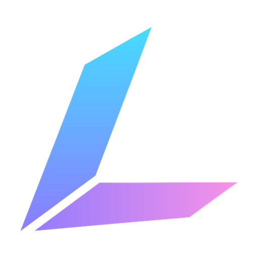

Говоришь — Lucy делает
Голосовой помощник для ПК, который слышит тебя даже в игре. Скажи «Люси» — и она откроет программу, убавит звук, нажмёт клавиши или ответит через ИИ. Распознавание работает без интернета.
Коротко
Что умеет
«Люси, открой Дискорд», «громкость игры 30», «сделай скриншот», «таймер на 10 минут». Понимает живую речь, а не заученные фразы.
Имя и команды распознаются прямо на ПК, голос никуда не уходит.
Голосовые макросы с профилями: сказал «щит» — нажаты клавиши. Звук, окна, OBS и Discord — не сворачивая игру.
Цепочки из шагов: открыть, подождать, нажать, сменить звук, открыть ссылку — одной фразой.
Облачные модели по своему ключу или локальный ИИ прямо на ПК.
Живой персонаж реагирует на имя и показывает, что Lucy слушает, думает и отвечает.
Скриншоты


Логотипы


Готовый текст
Lucy — голосовой помощник для Windows от инди-студии Kiyo Co. Говоришь «Люси» — и она открывает программы, меняет громкость, управляет окнами, нажимает клавиши в игре или отвечает через ИИ. Главное отличие — слух работает прямо на компьютере, без интернета: голос никуда не уходит, а Lucy слышит тебя даже поверх игры и музыки. Для игроков есть голосовые макросы и сценарии, для остальных — быстрые команды, таймеры, погода и живой персонаж на экране. Lucy скоро выйдет в раннем доступе Steam.
Ключ для обзора или розыгрыша
Даём ключи Steam блогерам, стримерам и каналам. Напишите на kiyoco.studio@gmail.com, укажите:
- ссылку на канал и где он (YouTube, Telegram, VK, Twitch);
- что планируете: обзор, стрим, пост или розыгрыш для подписчиков.
Отзыв в Steam взамен не нужен — честное мнение в любом виде.
Написать